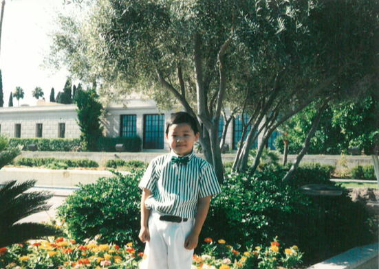

A long time neighbor, Professor Peter C. passed away last week.
When we moved into the neighborhood, 20 years ago, there were well over 50 people in the group, consisting of older men that met on Sundays.
Peter consistently sat in the back row.
The further away from the teacher, the more likely you will get a tangential yet insightful, memorable comments. Peter and others ensured that happened regularly.
The topic was
“Do unto others as you would have them do unto them.”1
Understand and serve from our vantage point or POV.
However, Peter responded,
Do unto others as they wish to be do unto them.2
Understand the need and provide service without considering our own needs. The Golden Rule can have varied meanings and applications
Needy vs Needed
Rabbi Manis Friedman’s responded to this question,3
…the purpose for their life?
“The first thing is you have freedom of choice. And the choice you need to make is a very simple one.
You can be needy. (or) You can be needed.
You can focus on your needs, try to satisfy your needs, pursue your needs… and you’re gonna get depressed.
Or you can focus on who needs you.
That’s who we are. We are necessary.”
A Leader among Us
At a young age, he surprised us by his thorough understanding and expressing and writing his thoughts with ease.
It is said of Jesus,
After three days they found him in the temple courts, sitting among the teachers, listening to them and asking them questions. Everyone who heard him was amazed at his understanding and his answers.
- NIV, Luke 2:46-47
For He
increased in wisdom and stature, and in favour with God and man.
Some are born with a foundational understanding of the eternal order. Practicing these principle for the benefit others.
He understood the Golden Rule from the needed person’s perspective. Loved and cared for others as they need to be cared and loved.
Till we all come in the unity of the faith, and of the knowledge of the Son of God, unto a perfect man, unto the measure of the stature of the fulness of Christ:
Thank you Spencer.

Versions of Golden Rule by Religion
The Golden Rule, which expresses the principle of treating others as you wish to be treated, is a common ethical teaching across many world religions. Here are various versions of the Golden Rule as found in different religious traditions:
1. Christianity
- Bible (New Testament, Matthew 7:12):
“So in everything, do to others what you would have them do to you, for this sums up the Law and the Prophets.” - This version emphasizes love and kindness as a foundational Christian principle.
2. Judaism
- Talmud, Shabbat 31a:
“What is hateful to you, do not do to your neighbor. That is the whole Torah; the rest is commentary.” - In Judaism, the focus is on avoiding actions that would harm others, emphasizing mutual respect.
3. Islam
- Hadith (Sahih Muslim):
“None of you [truly] believes until he wishes for his brother what he wishes for himself.” - This teaching in Islam emphasizes empathy and selflessness as part of true faith.
4. Hinduism
- Mahabharata 5:1517:
“This is the sum of duty: Do nothing to others which would cause you pain if done to you.” - Hinduism underscores duty and compassion in relationships, encouraging mindful and moral behavior.
5. Buddhism
- Udana-Varga 5:18:
“Hurt not others in ways that you yourself would find hurtful.” - In Buddhism, the principle is rooted in non-harming (ahimsa) and mindfulness of the effects of one’s actions.
6. Confucianism
- Analects 15:23:
“Do not do to others what you do not want done to yourself.” - Confucian teachings focus on moral reciprocity and social harmony.
7. Sikhism
- Guru Granth Sahib, p. 1378:
“Treat others as you would be treated yourself.” - Sikhism emphasizes equality, kindness, and mutual respect for all individuals.
8. Zoroastrianism
- Shayast-na-Shayast 13:29:
“That nature alone is good which refrains from doing unto another whatsoever is not good for itself.” - This ancient teaching emphasizes goodness and ethical behavior through consideration of others.
9. Taoism
- T’ai Shang Kan Ying P’ien:
“Regard your neighbor’s gain as your own gain, and your neighbor’s loss as your own loss.” - Taoism promotes a balance of relationships and harmony with others through empathy.
10. Bahá’í Faith
- Bahá’u’lláh:
“Lay not on any soul a load that you would not wish to be laid upon you, and desire not for anyone the things you would not desire for yourself.” - In Bahá’í, the Golden Rule extends to promoting unity and justice across humanity.
These versions of the Golden Rule across various faiths highlight a shared ethical foundation focused on empathy, compassion, and mutual respect, despite differences in theology.